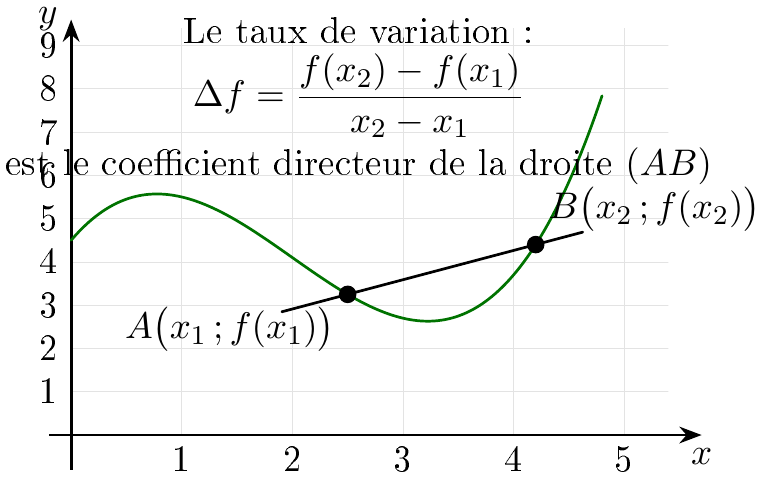
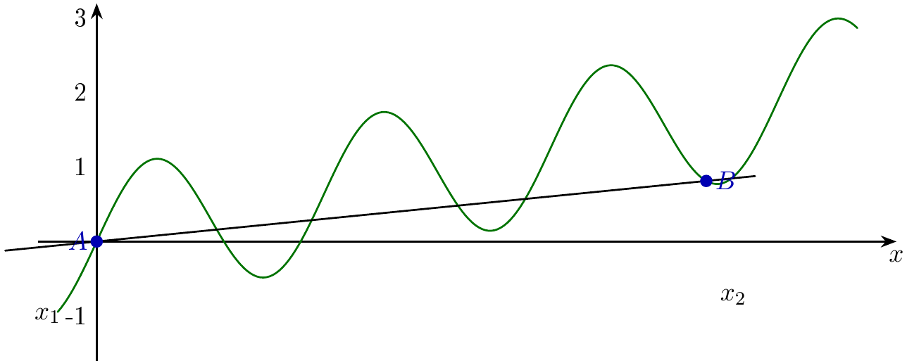
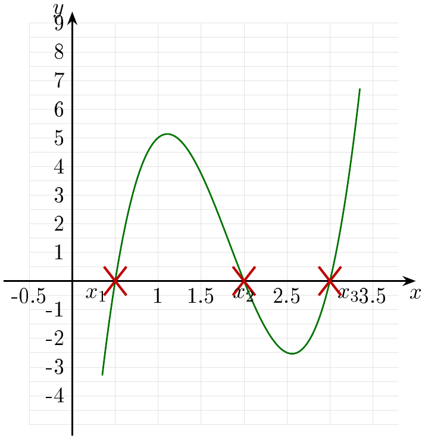
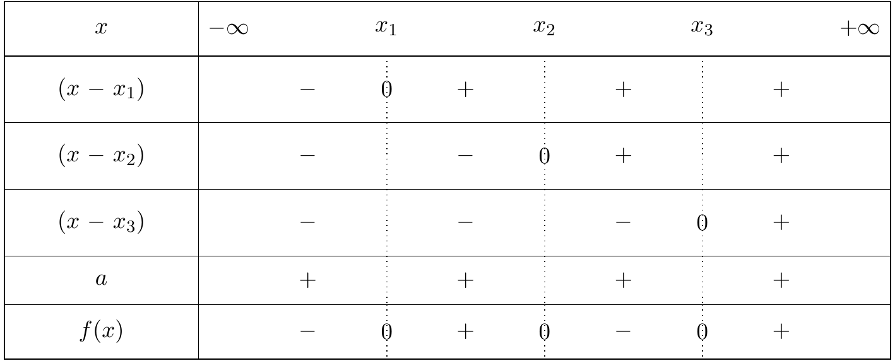
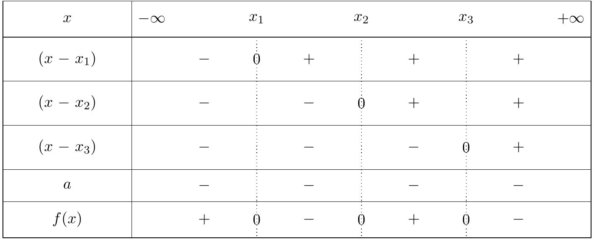

Chapitre V : Fonction polynôme de degré 3
Première STMG · Chapitre 5 — Fonction polynôme de degré 3 · cours de Frederik de Peyrelongue
I. Taux d'accroissement
Soit $f$ une fonction définie sur un intervalle $I$ de $\R$, et $x_{1}$ et $x_{2}$ deux points de $I$ : on appelle taux d'accroissement de la fonction $f$ entre $x_{1}$ et $x_{2}$ la quantité
On appelle la droite $(AB)$ une sécante.
$\Delta f$ est le coefficient directeur de la sécante.

Soit $f$ une fonction définie sur un intervalle $I$ de $\R$.
- Si, pour tous les réels distincts $x_{1}$ et $x_{2}$ de $I$, le taux de variation de $f$, $\Delta f=\dfrac{f(x_{2})-f(x_{1})}{x_{2}-x_{1}}$, est positif, alors la fonction $f$ a une tendance croissante entre $x_{1}$ et $x_{2}$.
- Si, pour tous les réels distincts $x_{1}$ et $x_{2}$ de $I$, le taux de variation de $f$, $\Delta f=\dfrac{f(x_{2})-f(x_{1})}{x_{2}-x_{1}}$, est négatif, alors la fonction $f$ a une tendance décroissante entre $x_{1}$ et $x_{2}$.
- Si, pour tous les réels distincts $x_{1}$ et $x_{2}$ de $I$, le taux de variation de $f$, $\Delta f=\dfrac{f(x_{2})-f(x_{1})}{x_{2}-x_{1}}=0$, alors $f(x_{2})=f(x_{1})$.
Remarque : le taux d'accroissement est un indicateur macro. Si $\Delta f>0$, on sait que la fonction a augmenté entre $x_{1}$ et $x_{2}$ ; néanmoins, elle peut tout à fait ne pas être monotone entre $x_{1}$ et $x_{2}$.
Exemple : la fonction $f$ augmente globalement entre $x_{1}$ et $x_{2}$, mais n'est pas monotone !

Soit $f(x)=x+2$ définie sur $\R$. Calculer le taux de variation de $f$ et conclure.
Soit $f(x)=ax+b$ définie sur $\R$. Calculer le taux de variation de $f$ et conclure.
Le taux d'accroissement d'une fonction affine est égal à son coefficient directeur.
Soit $f(x)=x^{2}$ définie sur $\R$. Calculer le taux de variation de $f$ et conclure.
II. Fonction polynôme du troisième degré
II.1 Définition
On appelle fonction polynôme de degré 3 (ou simplement fonction du troisième degré) toute fonction $f$ définie sur $\R$ par
où $a$, $b$, $c$ et $d$ sont des nombres réels et $a\neq 0$.
Exemple :
II.2 Résolution d'équation $x^{3}=c$
Soit $c$ un réel positif : alors l'équation $x^{3}=c$ admet une unique solution, qui est
Exemple : $x^{3}=27$, alors $x=3$.
II.3 Cas des fonctions polynômes de degré 3 ayant trois racines
Soit la fonction $f$ définie sur $\R$ par $f(x)=ax^{3}+bx^{2}+cx+d$, où $a$, $b$, $c$ et $d$ sont des nombres réels et $a\neq 0$.
- Si $f$ admet trois racines $x_{1}$, $x_{2}$ et $x_{3}$, alors $f(x)=a(x-x_{1})(x-x_{2})(x-x_{3})$ : on dit que $f$ est écrite sous la forme factorisée.
- Inversement, si une fonction $f$ de degré 3 est écrite sous la forme $f(x)=a(x-x_{1})(x-x_{2})(x-x_{3})$, alors cette fonction admet trois racines : $x_{1}$, $x_{2}$ et $x_{3}$.
Lien avec la représentation graphique :
Les racines de $f$ se lisent directement sur le graphique : il s'agit des abscisses des points d'intersection de $\mathcal{C}_{f}$ avec l'axe des abscisses.

II.4 Signe des fonctions polynômes de degré 3 ayant trois racines
- Si $f$ admet trois racines $x_{1}$, $x_{2}$ et $x_{3}$, alors $f(x)=a(x-x_{1})(x-x_{2})(x-x_{3})$ : on dit que $f$ est écrite sous la forme factorisée.
- On peut étudier le signe de $f$ en étudiant le signe de chacun de ses facteurs.
1er cas : $a>0$

2ème cas : $a<0$

Étudier le signe de